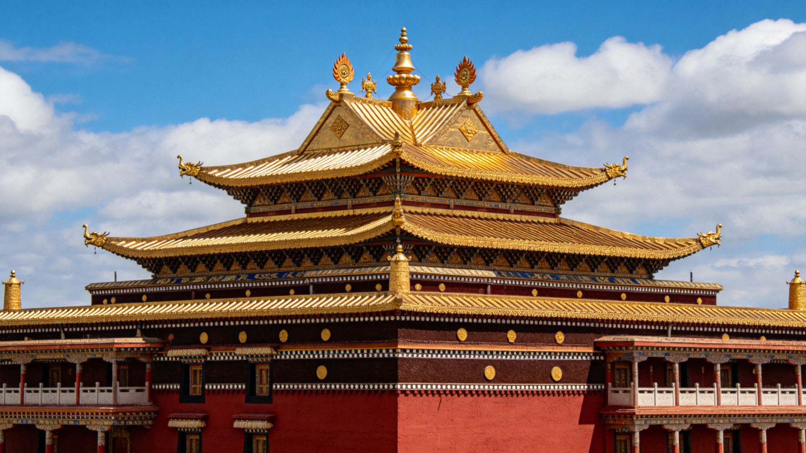
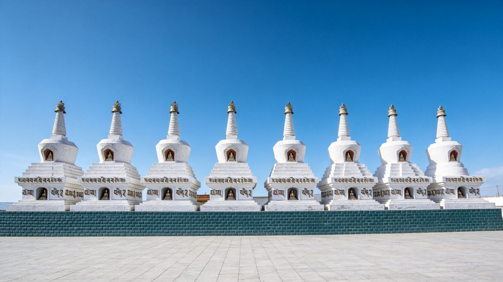
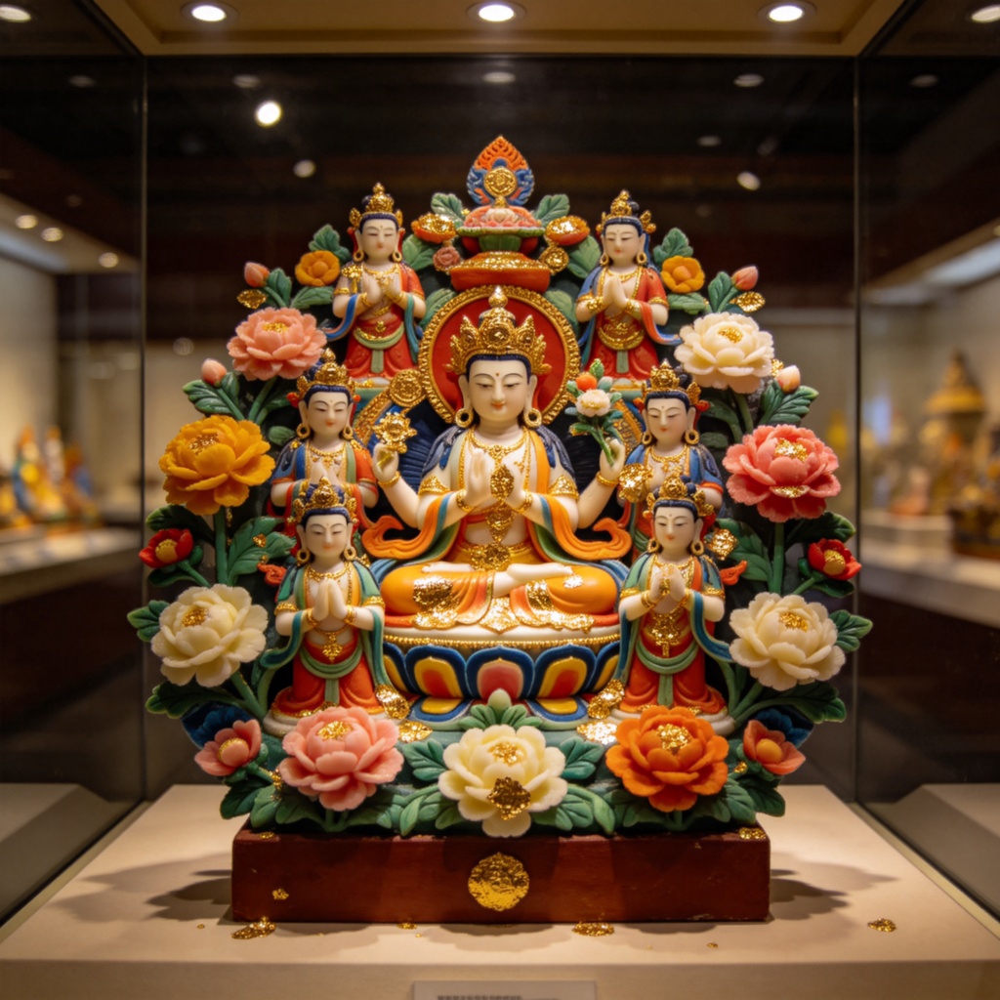

塔尔寺（Taer Temple），位于青海省西宁市湟中区鲁沙尔镇金塔路56号，是明、清两代重要的藏传佛教寺庙建筑群。因藏传佛教格鲁派（俗称黄教）创始人宗喀巴诞生于此而闻名天下，位列格鲁派六大寺院之一，同时也是青海省佛学院的最高学府，设有显宗、密宗、天文、医明四大学院。
寺院占地面积0.45平方千米，建筑分布于莲花山的一沟两面坡上，以大金瓦殿为中心，拥有各类建筑九千三百余间（座），总建筑面积10万多平方米。1961年3月4日，塔尔寺被中华人民共和国国务院公布为第一批全国重点文物保护单位。
塔尔寺的起源与一位伟大的宗教改革家——宗喀巴（1357—1419）密不可分。宗喀巴本名罗桑扎巴，因出生于宗喀地区（今青海湟中）而得名。他后来远赴西藏求学修行，创立了格鲁派，成为藏传佛教史上最有影响力的人物之一。
💡 「塔尔寺」名字的由来：藏语称「衮本贤巴林」，意为「十万身像弥勒洲」。汉语「塔尔寺」意为「先有塔，后有寺」——宗喀巴母亲最初只是在他诞生处修了一座莲聚塔，后来围绕此塔逐渐建起了庞大的寺院建筑群。就像一棵树从一粒种子长成参天大树，塔尔寺是从一座小小的纪念塔发展为占地0.45平方千米的宏伟寺院。
塔尔寺的建筑群堪称汉藏建筑艺术融合的典范。寺院巧妙地利用了莲花山的山形地势，沿山脚和沟谷布置，使总体建筑群和各个单体建筑有机组合——建筑形体有大有小、有繁有简，格局有主有从，形成了错落有致、布局严谨的宏大寺院。

🏛 大金瓦殿
始建于明天启二年（1622年），是塔尔寺的核心建筑，大殿正中供有纪念宗喀巴的银塔。大殿平面呈品字形，面积456平方米，为三重檐歇山鎏金铜瓦顶，回廊周匝，檐口饰以鎏金云头挂板，正脊安装鎏金宝顶和喷焰摩尼。清康熙年间用黄金1300两将殿顶改为金顶后，更显金碧辉煌。
通俗地说，大金瓦殿就像塔尔寺的「心脏」——所有建筑围绕它展开，殿内供奉的银塔通高11.26米，塔基、塔身均为纯银鎏金，周身镶嵌珊瑚、宝石，是整个寺院最神圣的地方。
🕌 八宝如意塔
又称「善逝八塔」，建于清乾隆四十一年（1776年），矗立于寺前广场。八座塔大同小异，塔身高6.4米，塔底周长9.4米。塔身白灰抹面，底座青砖砌成，腰部装饰有藏文经文，每个塔身南面还有一个佛龛，内藏梵文。八塔分别纪念释迦牟尼一生的八大功德——从诞生到涅槃。
这八座白塔是游客最熟悉的地标，就像塔尔寺的「迎宾大道」——所有访客都会先经过这片庄严的白塔广场，再进入寺院深处。

📿 大经堂
塔尔寺内建筑面积最大的殿堂，始建于明万历四十年（1612年），为木土结构的藏式双层平顶建筑。经堂内设有总法台宝座，数十条长形禅座可容纳6000名僧人同时诵经——想象一下，六千人同声念经的场面是何等壮观！堂内108根大柱均用毛毯包裹，上有蟠龙采云图，顶部垂挂幡幢、宝盖和堆绣画。
其他重要建筑
小金瓦殿（护法神殿）：初建于清康熙三十一年（1692年），殿顶为镏金铜瓦，与大金瓦殿遥相呼应。殿内除供护法神像外，还展示着熊、野牛、马、野羊等标本，象征被护法神制服的各种恶魔——给人以强烈的视觉冲击和宗教敬畏感。
弥勒佛殿：始建于明万历五年（1577年），殿内主供弥勒佛12岁身量像，全部镀金。殿门两旁各有一通藏文石碑，记录了九世班禅驻锡和各位活佛布施的历史事件。
文殊菩萨殿（九间殿）：建于明万历二十年（1592年），为汉族歇山式建筑，建筑面积595平方米，由九大间组成。殿前立有五通石碑，记载了内蒙古、青海等地僧俗为塔尔寺布施的事迹。
塔尔寺的建筑独特之处在于它融合汉藏两种建筑风格：将汉式三檐歇山式与藏族檐下巧砌鞭麻墙、中镶金刚时轮梵文咒和铜镜、底层镶砖的形式融为一体。简单来说，你在这里既能看见汉式大屋顶的飞檐翘角，也能看到藏式的厚重墙体和平顶结构——两种文化在建筑中完美对话。
塔尔寺内有大量的鎏金铜质佛像、金银法器、金书藏经、木刻藏经以及灵骨塔等珍贵文物。而在这些藏品和传统工艺中，尤以酥油花、壁画和堆绣最为名贵，被誉为塔尔寺「艺术三绝」。



🎨 酥油花：用酥油掺和其他物质精工堆塑而成的立体彩塑。色彩华丽协调，加上金箔装饰，绚丽夺目。酥油花的制作难度极大——因为酥油在常温下会融化，艺人必须在寒冷的冬季将手浸泡在冰水中降温后才能进行捏塑，每一朵酥油花都凝结着艺人的虔诚与艰辛。
🖼 壁画（唐卡）：绘画内容丰富、数量之多，为其他藏传佛教寺院所少见。这些绘画除了直接绘在墙壁上，还有绘在布幔、丝麻织品上的唐卡，全部采用矿物颜料绘制，所以历经数百年依然色彩鲜艳、经久不变。就像用石头磨成的颜料画画，时间越久越有味道。
🧵 堆绣：用各种颜色的绸缎、羊皮、棉花、绒毛等在布帛丝麻等织物上堆贴绣制而成，内容涵盖佛像、菩萨、罗汉、花卉、鸟兽等。这是一种介于绘画和浮雕之间的独特艺术形式——绣出来的立体画卷。

🧘 宗喀巴（1357—1419）
宗喀巴本名罗桑扎巴，出生于今青海湟中（藏语称湟中为「宗喀」，故称宗喀巴）。他是藏传佛教格鲁派（黄教）的创始人，被誉为「第二佛陀」，是藏传佛教史上最伟大的宗教改革家之一。
宗喀巴7岁在夏琼寺出家，16岁赴西藏深造，遍学各派经典。在那个时代，藏传佛教一些教派戒律松弛、修行混乱。宗喀巴振臂高呼，要求僧人严守戒律、独身不娶、先显后密次第修行。1388年，他改持黄色僧帽作为重整戒律的象征——格鲁派因此又称「黄帽派」。
1409年，宗喀巴在拉萨发起祈愿大法会并创建甘丹寺，标志着格鲁派正式创立。他培养的弟子中，克珠杰被追认为一世班禅，根敦朱巴被追认为一世达赖——可以说，他一手奠定了藏传佛教后世几百年的格局。
每年藏历十月二十五日，蒙藏地区寺院和家庭都会燃灯纪念宗喀巴圆寂，称为「燃灯节」——成千上万盏酥油灯同时点亮，如星河落入人间，以此缅怀这位伟大的宗教改革家。

☀️ 晒大佛（展佛节）
每年农历四月和六月，塔尔寺都会举行盛大的晒佛仪式。所谓「晒佛」，是将放置一年的巨大佛像唐卡请出来在露天展示——一方面是防霉防虫保护文物，更重要的是供信众朝拜。塔尔寺有「狮子吼」「释迦牟尼」「宗喀巴」「金刚萨埵」四种巨型堆绣佛像，每次只晒一种，在寺院山坡上展晒。当东方第一缕曙光照到佛像的那一刻，即为展佛的最佳时辰，场面极为壮观。
🧊 冷知识 #1：酥油花艺人为什么要冰手？酥油的熔点很低，在常温下就会软化变形。所以艺人在制作酥油花时，必须不断将双手浸入冰水中降温，让手指保持冰冷状态才能进行精细捏塑。每一位酥油花艺人都是用「冻出来的艺术」来表达虔诚。
🏗 冷知识 #2：「先有塔，后有寺」是真的吗？是的！塔尔寺的「塔」指的是1379年宗喀巴母亲修建的莲聚塔，「寺」则是后来围绕此塔逐渐建起的殿宇群。从一座小小的纪念塔发展到占地0.45平方千米的庞大寺院，用了近两百年时间。
👑 冷知识 #3：为什么格鲁派叫「黄教」？1388年，宗喀巴为了表明重整戒律的决心，将僧帽改为黄色——这就是「黄教」名称的来源。黄色在藏传佛教中象征戒律和智慧。从此以后，格鲁派僧人的黄色桃形帽成为最醒目的标志。
🌍 冷知识 #4：塔尔寺周边已是博物馆群青海省以塔尔寺为核心构建了博物馆群——周边有藏文化馆、河湟文化博物馆、八瓣莲花非遗传承体验中心等。游览塔尔寺的同时，还可以体验锅庄舞、皮影戏、青海花儿等民间文化艺术。
🛐 参观礼仪小贴士：
• 进入殿堂请脱帽、保持安静，不要大声喧哗
• 绕行佛塔、转经筒请按顺时针方向（这是藏传佛教的传统习俗）
• 不要用手指直接指向佛像，可用手掌向上示意
• 尊重僧人的宗教生活，未经允许不要近距离拍摄僧人
• 殿内门槛较高，跨过时请勿踩踏门槛（藏传佛教认为门槛是佛的肩膀）